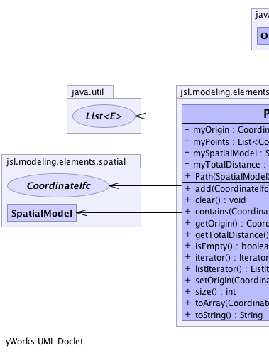

jsl.modeling.elements.spatial.Path
jsl.modeling.elements.spatial.Path
|
||||||||||
| PREV CLASS NEXT CLASS | FRAMES NO FRAMES | |||||||||
| SUMMARY: NESTED | FIELD | CONSTR | METHOD | DETAIL: FIELD | CONSTR | METHOD | |||||||||
java.lang.Object
public class Path
|  |
| Field Summary | |
|---|---|
private CoordinateIfc |
myOrigin
|
private java.util.List<CoordinateIfc> |
myPoints
|
private SpatialModel |
mySpatialModel
|
private double |
myTotalDistance
|
| Constructor Summary | |
|---|---|
Path(SpatialModel model)
|
|
| Method Summary | |
|---|---|
boolean |
add(CoordinateIfc point)
Adds a point to the path. |
void |
clear()
Clears the underlying list, sets the origin to null and resets the length of the path to zero |
boolean |
contains(CoordinateIfc arg0)
Checks if the given Vector2D is in the path |
CoordinateIfc |
getOrigin()
The coordinate of the origin of the path |
double |
getTotalDistance()
Gets the total distance associated with linear pt. to pt. travel on the path |
boolean |
isEmpty()
Checks whether the path is empty |
java.util.Iterator<CoordinateIfc> |
iterator()
Returns an iterator over the path |
java.util.ListIterator<CoordinateIfc> |
listIterator()
Returns a ListIterator over the path |
void |
setOrigin(CoordinateIfc origin)
Sets the origin associated with the path |
int |
size()
The number of points in the path. |
CoordinateIfc[] |
toArray(CoordinateIfc[] arg0)
Converts the paths to an array |
java.lang.String |
toString()
|
| Methods inherited from class java.lang.Object |
|---|
clone, equals, finalize, getClass, hashCode, notify, notifyAll, wait, wait, wait |
| Field Detail |
|---|
private java.util.List<CoordinateIfc> myPoints
private CoordinateIfc myOrigin
private double myTotalDistance
private SpatialModel mySpatialModel
| Constructor Detail |
|---|
public Path(SpatialModel model)
| Method Detail |
|---|
public final CoordinateIfc getOrigin()
public final void setOrigin(CoordinateIfc origin)
origin - public final double getTotalDistance()
public boolean add(CoordinateIfc point)
arg0 -
public final void clear()
public boolean contains(CoordinateIfc arg0)
arg0 -
public final boolean isEmpty()
public final java.util.Iterator<CoordinateIfc> iterator()
iterator in interface java.lang.Iterable<CoordinateIfc>public final java.util.ListIterator<CoordinateIfc> listIterator()
public final int size()
public final CoordinateIfc[] toArray(CoordinateIfc[] arg0)
Coordinate - arg0 -
public java.lang.String toString()
toString in class java.lang.Object
|
||||||||||
| PREV CLASS NEXT CLASS | FRAMES NO FRAMES | |||||||||
| SUMMARY: NESTED | FIELD | CONSTR | METHOD | DETAIL: FIELD | CONSTR | METHOD | |||||||||